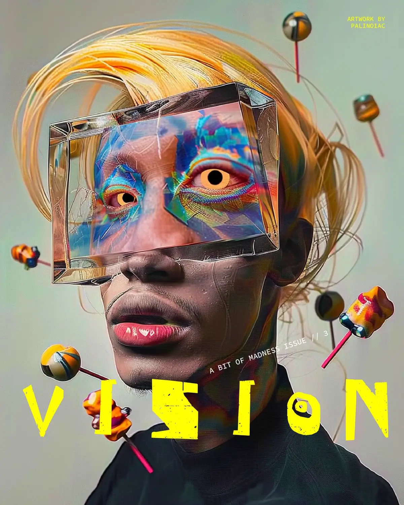
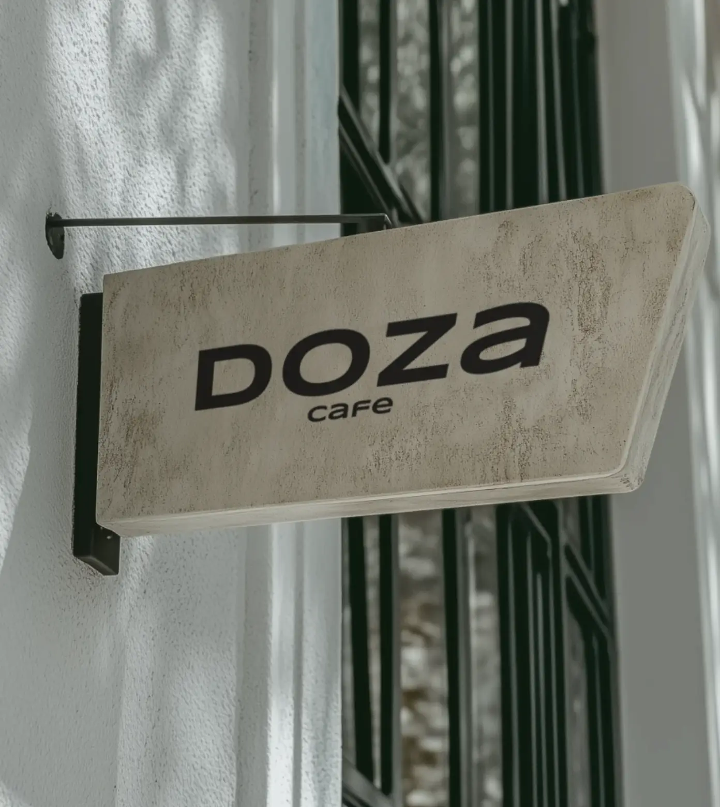
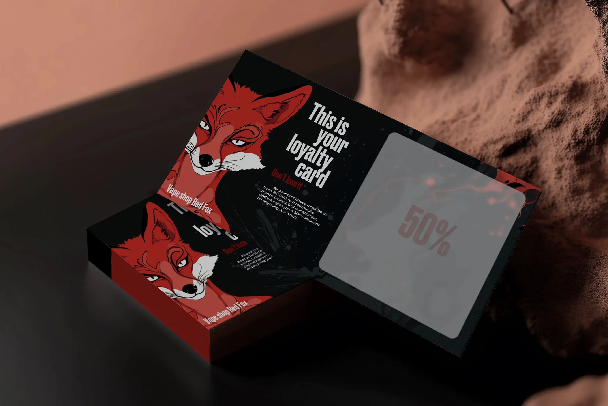
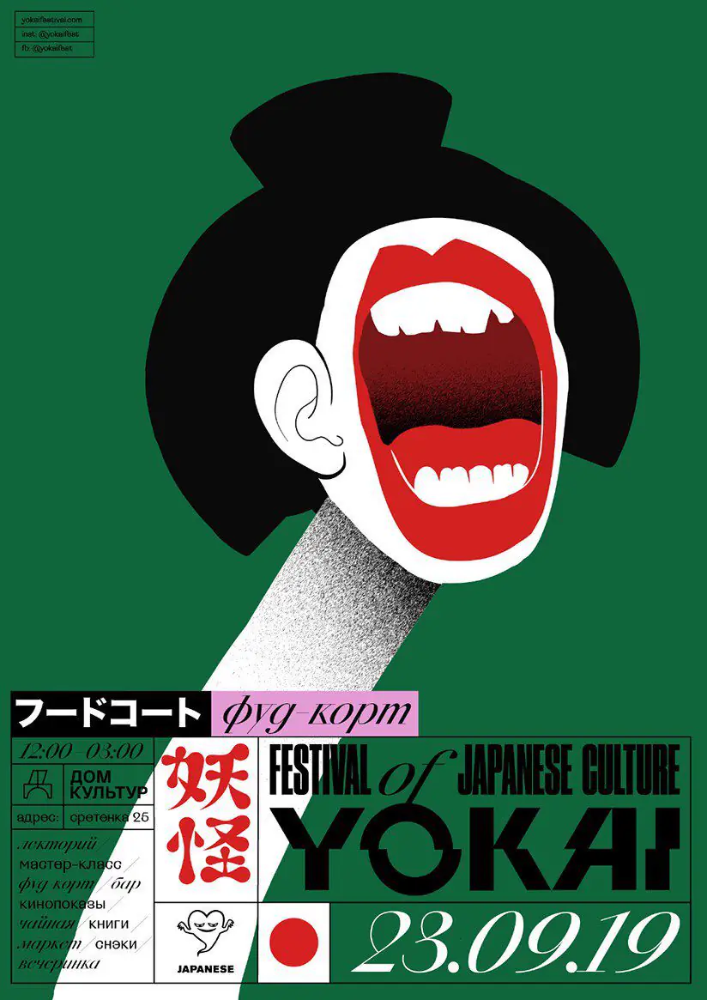

Веб-дизайн, стратегия
и digital для амбициозных
проектов
МАКСИМ · WEB DESIGNERСНГ / WORLDWIDE



сайтыstartupsинтернет-магазиныidentitydigital-дизайнAI-контент
01
Избранные работы
2023—2026


Показать больше кейсов?

Независимый веб-дизайнер, который помогает компаниям превращать идеи в ясные и выразительные цифровые продукты.
Работаю напрямую с основателями и командами: от позиционирования и структуры до визуальной системы, сайта и запуска.
03
Чем могу помочь
От идеи до запуска01
AI-разработка лендинга
Продающий лендинг с продуманной структурой, сильной визуальной подачей и адаптивной разработкой — для тех, кто хочет быстро протестировать идею, запуститься без лишних затрат и при этом сохранить высокое качество.
200$ / 5 днейЗаказатьСмотреть примеры
02
Разработка под ключ
Полный цикл от структуры и дизайна до адаптивной сборки, интеграций и публикации. Подберу оптимальный стек под задачу: Tilda, WordPress, Framer, TapTop или кастомная разработка на HTML, CSS и JavaScript.
03
Автоматизация процессов
Автоматизирую повторяющиеся процессы, создаю чат-ботов и AI-агентов, связываю сервисы и данные в единую систему. Решения помогают быстрее обрабатывать заявки, поддерживать клиентов и снимать рутинную нагрузку с команды.
04
Стратегия и структура
Исследование, позиционирование, сценарий сайта и прототип.
05
Веб-дизайн
Арт-дирекшн, дизайн-система, адаптивные экраны и motion.
06
Запуск
Подготовка к разработке, авторский надзор и контроль качества.
04 · FAQ
Частые вопросы
Не нашли ответа на свой вопрос?
Спросите напрямую

Лендинг — 5–14 рабочих дней, сложные сайты — в среднем 21–30 рабочих дней. Точный срок зависит от объёма, готовности контента и сложности разработки; до старта я фиксирую этапы и календарь проекта.
Да. Перед стартом мы заключаем договор, в котором фиксируются состав работ, сроки, стоимость, порядок оплаты и обязательства сторон.
Исследование и позиционирование, структура, прототип, визуальная концепция, дизайн всех экранов, адаптивные версии и подготовка проекта к запуску.
Работаю в Figma, собираю проекты на Tilda и разрабатываю кастомные сайты на HTML, CSS и JavaScript. Стек подбираю под задачи, бюджет и дальнейшее развитие проекта.
Если у вас есть хорошее техническое задание — этого достаточно для старта. Если ТЗ нет, я помогу подготовить его с помощью подробного брифинга.
На все проекты я даю 2 круга правок — этого хватает в 90% случаев.